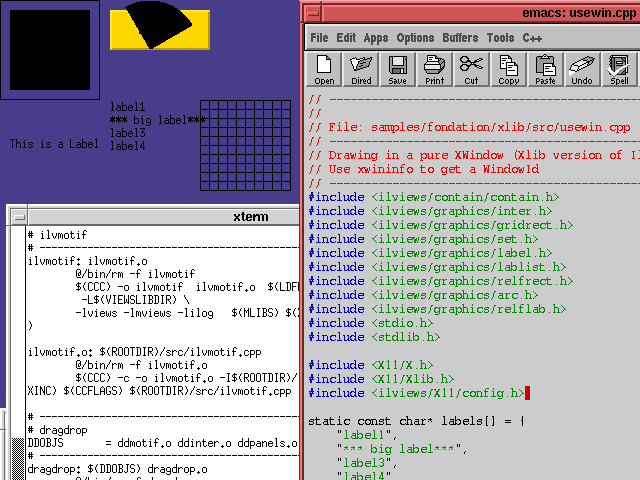
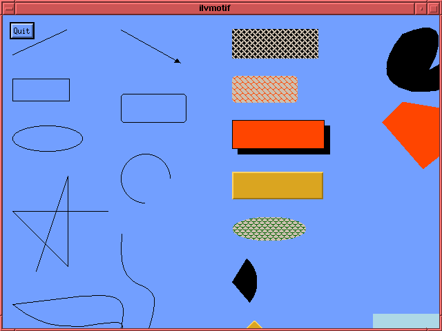
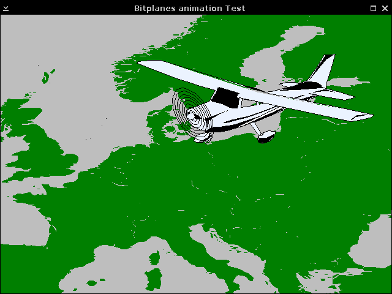

usewinThis sample demonstrates how to take control over any existing X Window.

When launching this application, you can provide, as the
unique parameter, the identifier of the X Window you want
Rogue Wave Views to take control of. If no parameter is specified,
the default window used is the root window.
You can use the X client xwininfo to find out
what window ID is used by a given application running on your
system: run xwininfo, then click in the
destination window. xwininfo prints out the
window ID of the window, that you can simply provide to
usewin, like in:
usewin 0x440023cIlvDisplayIlvXDisplayConfigIlvContainerilvmotifThis sample demonstrates how to take control over any existing Motif gadget.

Although Rogue Wave Views has a pure Motif port that makes the
integration easier, there are situations where you may want to
use the pure Xlib port of Rogue Wave Views (the one that uses the
xviews library) in a gadget.
Because a gadget is based on an actual X Window, the
integration is also possible.
The principle is to add an Xtevent handler on the gadget you
want to take control on. This event handler will redirect events
to Rogue Wave Views.
IlvDisplayIlvXDisplayConfigIlvContainermpanimThis sample demonstrates how to use the Rogue Wave Views capability of accessing X Windows bitplanes. Note that this sample fully makes sense only on X visual that are PseudoColor.
The Manager package must be installed to be able to build this sample.
Three bitplanes are reserved for a background map (see the
DisplayConfigCallback Display Configuration
Callback), and the other planes will be used to animate
objects on top of this map. The animated object is a
graphic set stored in a layer that is associated
with the top bitplanes group, so that the bitplanes
animation is performed automatically.
Because the map and the animated object are located in separated bitplanes, there is no need to redraw the background map when the object moves. This achieves the best animation speed.
The program recognizes the following options:
-display displayName: as any X
client.-nom[ultipleplanes]: Specifies that you
wnat not to use the multiple bitplanes feature.-nod[oublebuffering]: Specifies that the
sample will no use double buffering, nor multiple
bitplanes. This is the option that makes the
animation smoothness the worse.-map[File] fileName: The
ILV file that you want to load as the
background map. The default is
"../DCW/europe.ilv".-anim[File] fileName: The
ILV file that you want to load as the
animated object. The default is
"plane.ilv".-scale scaleValue: The scaling
factor that is applied to the animated object before
it is stored in the manager. The default value is
1.IlvDisplayIlvManagerIlvInteractor